dev@aldrine:~$ whoami
John Aldrine Lim_
// Software Developer — Sta. Rosa, PH
$ uv run portfolio.py
AI & Machine Learning
Full-Stack Development
Software Engineering
Game Development
Cloud Deployment
dev@aldrine:~$
dev@aldrine:~$ cat about.md
# About
I'm a Computer Science student and software developer with an interest in full-stack web development, machine learning, and game development. I enjoy building practical applications that solve real-world problems while writing clean, reliable, and easy-to-maintain code.
Beyond building software, I enjoy continuously learning new technologies, collaborating with others, and sharing knowledge whenever I can. I believe that writing good software is not only about code but also about clear communication, thoughtful design, and continuous improvement.
- coding
- 5+ years
- experience
- 2+ years
- focus
- full-stack
- status
- internship @ prosperna
dev@aldrine:~/skills$ ls -la
drwxr-xr-x frontend/
drwxr-xr-x backend/
drwxr-xr-x machine-learning/
drwxr-xr-x databases/
drwxr-xr-x cloud-deployment/
drwxr-xr-x tools/
dev@aldrine:~/certs$ ls -la --sort=date
Exploratory Data Analysis for Machine Learning
Course verify ↗Prepare Data for ML APIs on Google Cloud
Jul 13, 2024 verify ↗Set Up an App Dev Environment on Google Cloud
Jul 13, 2024 verify ↗Build a Secure Google Cloud Network
Jul 13, 2024 verify ↗Implementing Cloud Load Balancing for Compute Engine
Jul 13, 2024 verify ↗Google Cloud Computing Foundations: Data, ML, and AI in Google Cloud
Jul 13, 2024 verify ↗Google Cloud Computing Foundations: Infrastructure in Google Cloud
Jul 9, 2024 verify ↗Google Cloud Computing Foundations: Networking & Security in Google Cloud
Jul 9, 2024 verify ↗Google Cloud Computing Foundations: Cloud Computing Fundamentals
Jun 9, 2024 verify ↗
10 credentials · Google Cloud, Coursera/IBM
dev@aldrine:~/projects$ ls --featured
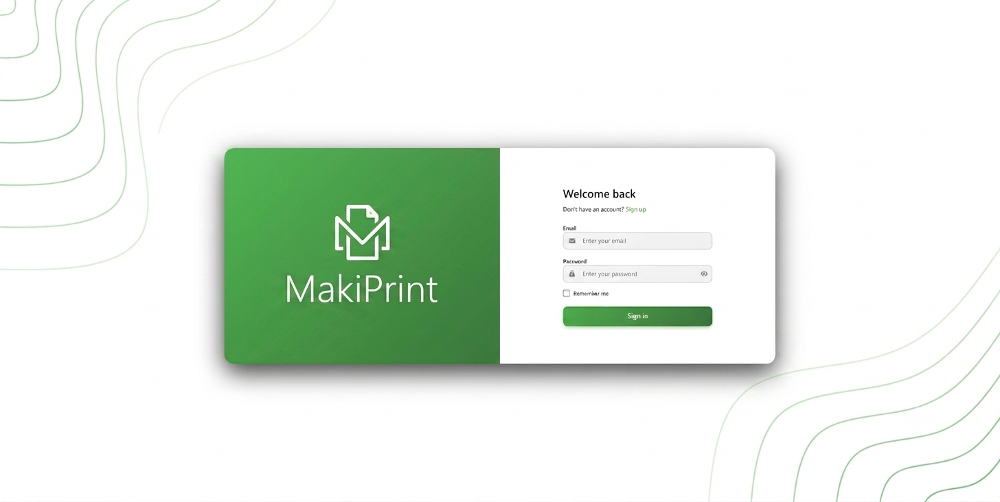
MakiPrint ↗
A print-cost estimation web app that analyzes uploaded images to compute CMYK ink coverage and whitespace, then predicts ink usage with a trained neural model — helping print shops quote jobs accurately. Includes role-based access and PDF handling.
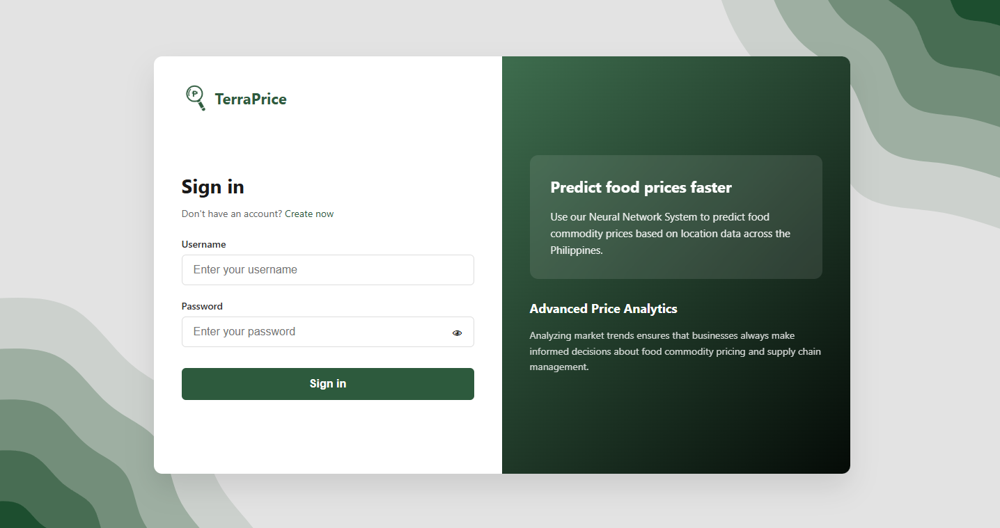
TerraPrice ↗
An agricultural forecasting tool that predicts food/crop prices from geographic location using regional data, historical trends, and time-series models — giving farmers and planners a data-driven view of upcoming market changes.
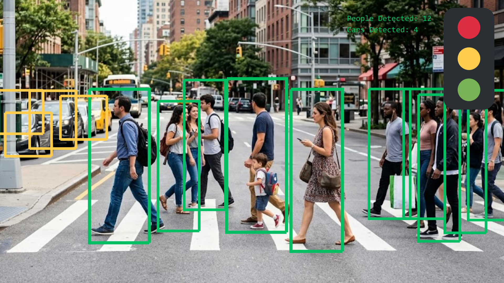
Crosswalk CV ↗
A computer-vision project for detecting pedestrian crosswalks and activity from camera input, applying image-processing and deep-learning techniques to real-world street scenes.
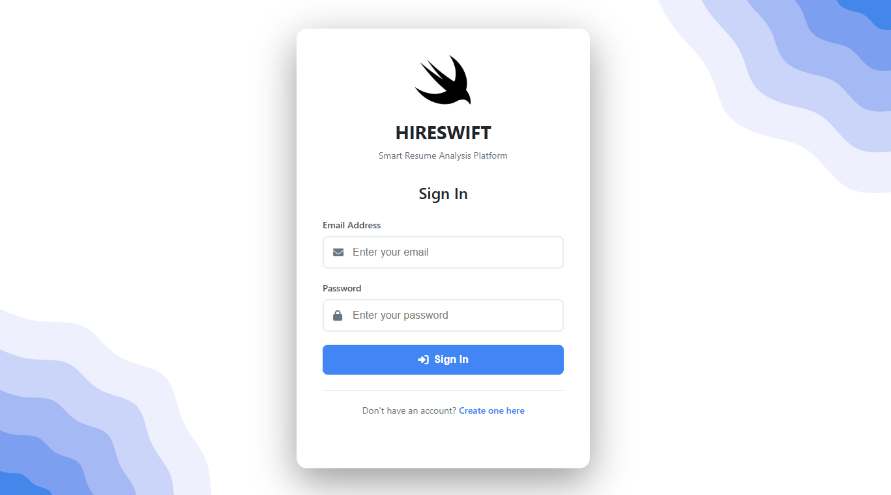
HireSwift ↗
A hiring-automation platform that streamlines candidate screening by using LLMs and NLP to parse resumes and extract key details — skills, experience, and qualifications — so recruiters can shortlist applicants faster and more consistently.
dev@aldrine:~/work$ cat prosperna.md
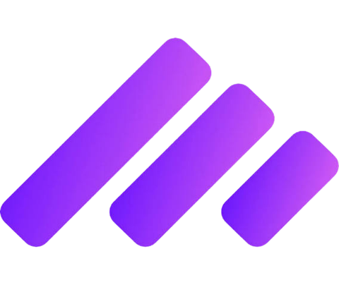
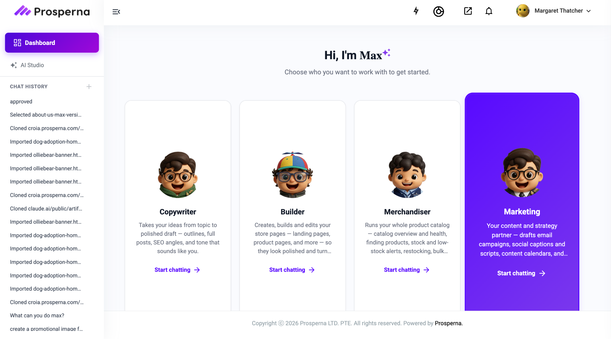
Max AI — the Marketing panel, where every feature below lives
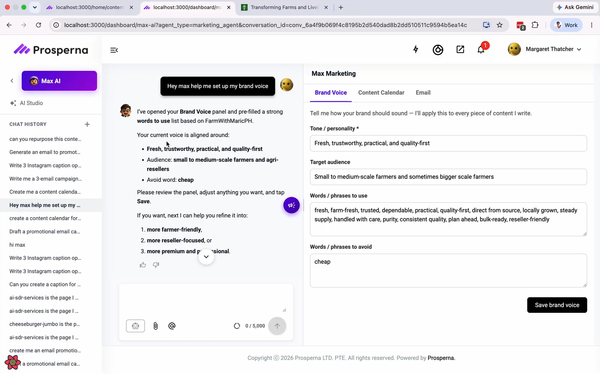
Brand Voice
A plain-language form (tone, audience, words to use/avoid) that teaches Max how the brand sounds. The only permanently persisted tab — it survives across sessions and new chats, and every other feature silently inherits it. Also fixed a lock bug where saved brand voice was wrongly counted as "unsaved work," trapping merchants in the agent.
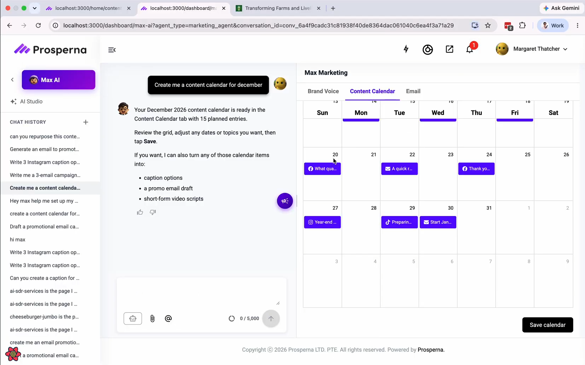
Content Calendar
A full month grid Max populates with per-channel content ideas. Pre-loads existing plans, flags date conflicts and asks before replacing anything, and supports click-to-edit and drag-to-reschedule. Also available as a standalone dashboard page sharing the same storage — one calendar, two entry points.
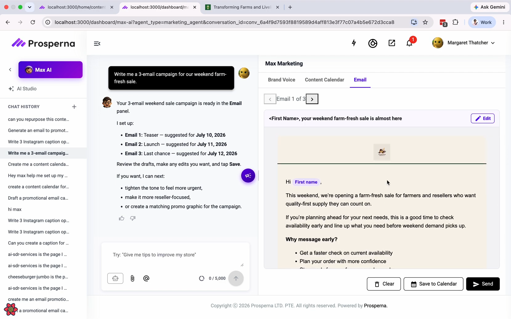
Email Drafting & Campaigns
Drafts single emails or multi-email campaigns. Redesigned generation to append rather than overwrite, so a 3-email campaign keeps all three — browsable via an "Email 1 of 3" carousel where each draft edits independently. Renders in a live branded preview with real store logo, colors, CTA button, and merge-token personalization.
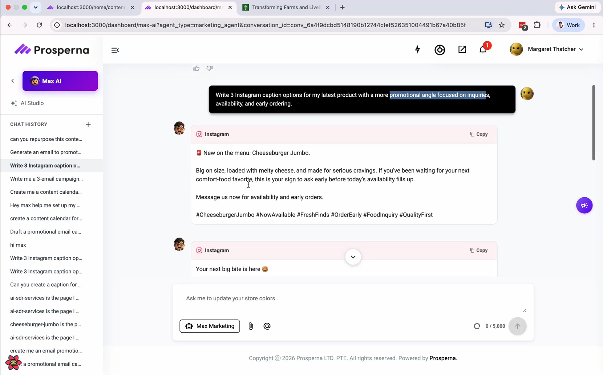
Social Media Captions
Generates 2–3 ready-to-use caption variants per post instead of one generic line. If no tone is given, Max offers angle choices ("Playful," "Educational," "Urgency") and waits for a pick before writing — keeping output usable rather than a generic miss. Each card is one-click copyable.
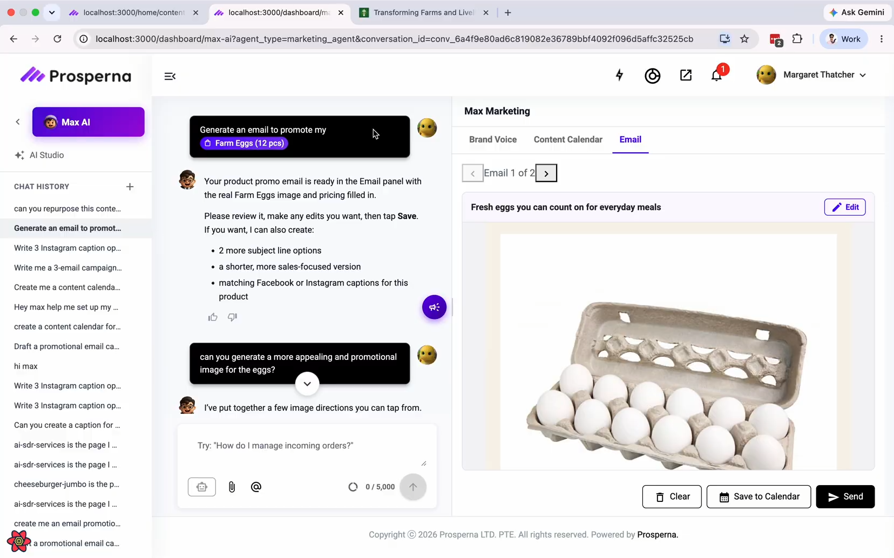
Product Promotion
Builds content around a real product from the merchant's catalog — reading actual name, price, and image rather than inventing details, then producing an email, captions, or a calendar entry featuring it. Enforces a strict rule: only verified catalog images and links, never placeholder or invented ones.
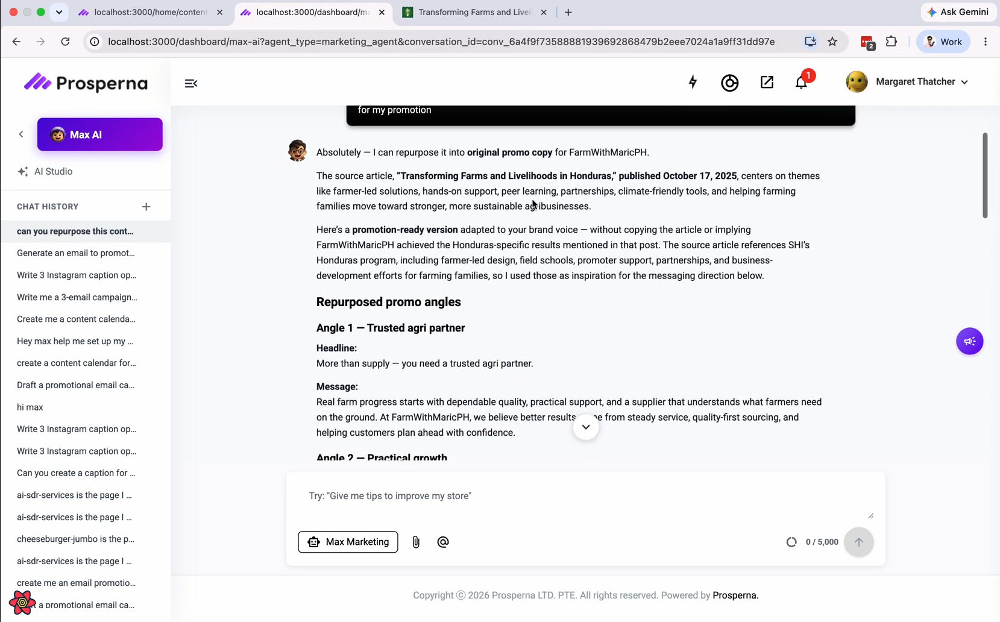
Content Repurposing
Turns an existing source article into original, on-brand promo copy — offering several distinct angles (headline + message per angle) adapted to the merchant's brand voice. Deliberately avoids copying the source or implying the merchant achieved results described in it, using the article only as messaging inspiration.
dev@aldrine:~$ gh api /users/dev-aldrine/contributions
····
loading contribution data…
Less
More
dev@aldrine:~$ ssh guest@yourdomain.dev
Connection established. Need help? Reach out.